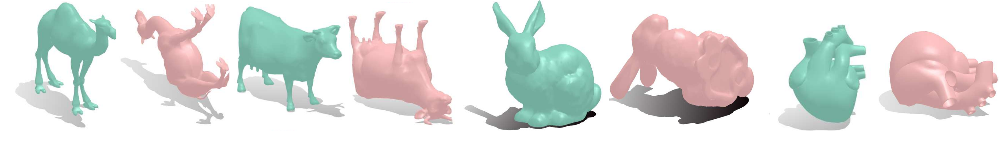

Degree Publications
Master Thesis

Title: Optimal rotations for overhang reduction.
Advisor: Dr. Leonardo Sacht (site)
Abstract: 3D printing is gaining ground in many areas around the world, being used in construction, modeling and mockups, educational purposes and for health research, as well as in the printing of body parts for surgery assistance. When the printer needs to print a 3D surface, some of the parts may be suspended in the air, requiring support for better printing. These supports are detached from the object and are discarded, generating waste of material and money. This thesis proposes a new approach for this problem of 3D surface printing based on the normal field of surfaces, which seeks a global surface orientation, so that, after rotating the surface by the obtained orientation, its printing generates as less support as possible.
Keywords: 3D printing, normal field, support, overhang, optimization.